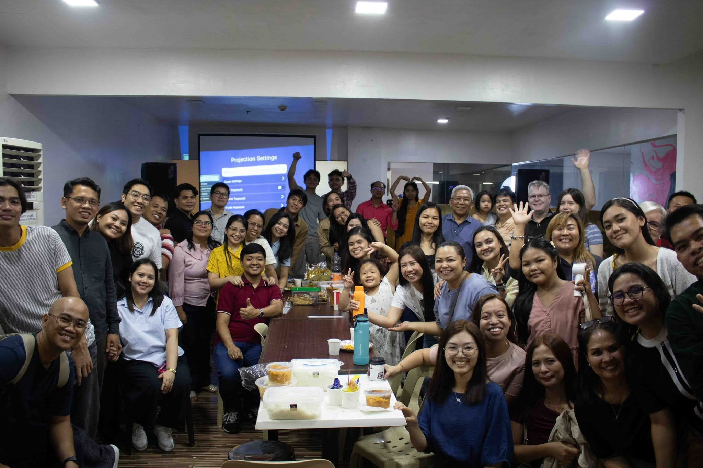
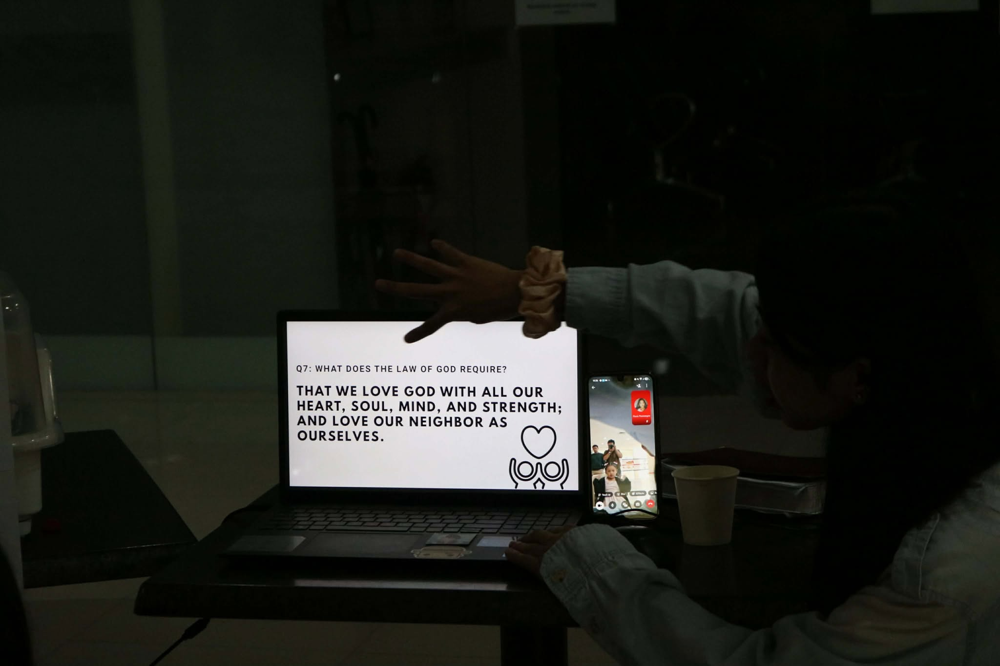
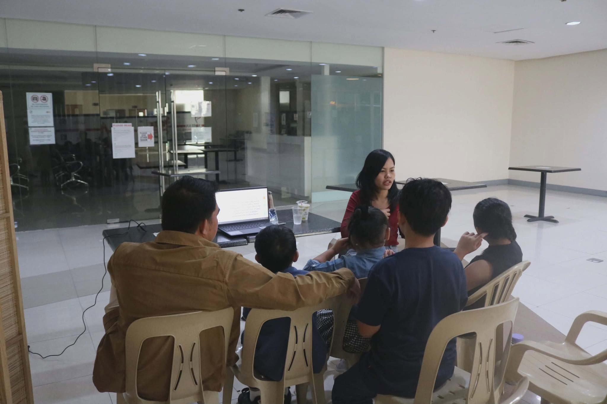
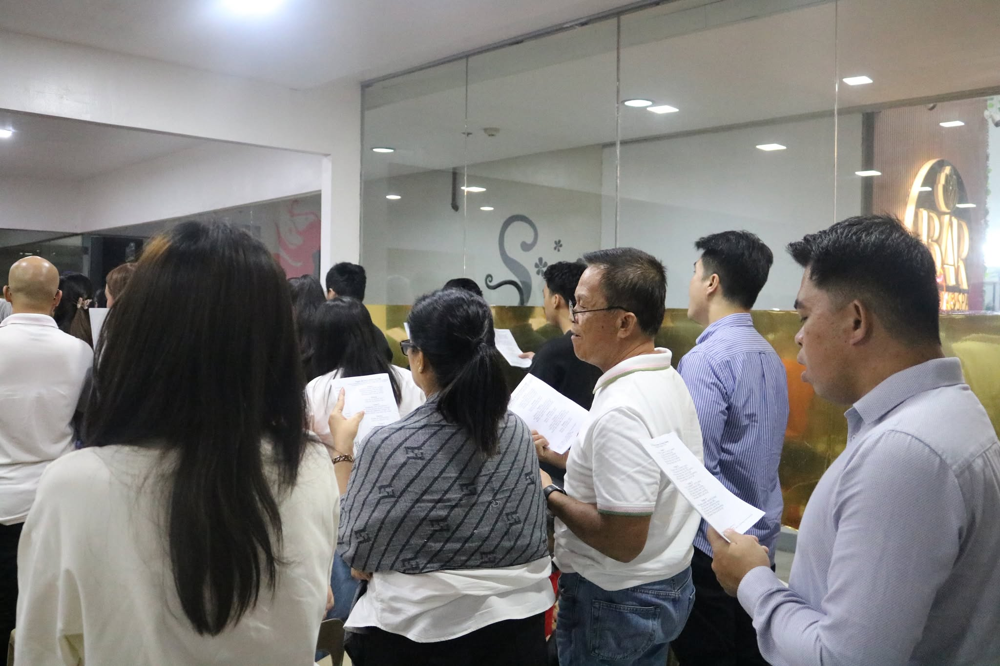
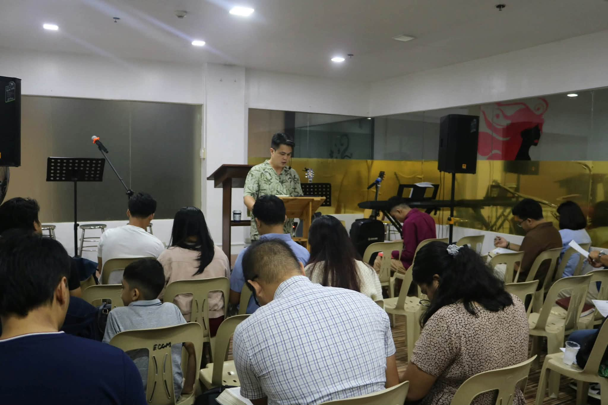

Evangelical Covenant Church Manila
- Foundations ClassSunday, 9:30 AM
- Sunday ServiceSunday, 10:30 AM
Our vision
Evangelical Covenant Church Manila is an embassy of the Lord Jesus Christ in Manila, making disciples from the regions to become Gospel ambassadors to the nations.
We gather to hear God's Word, worship together, and care for one another as a covenant community.
Join the life of the church
Find where you belong, learn what we believe, and come see us in person.
Ministries
Classes and fellowships for men, women, and children. Find a group to learn and grow with.
Statement of Faith
What we believe and the covenant we keep together.
Find us
University Mall, Taft Ave., Malate, Manila.





Weekly gatherings
- Sunday9:30 AM
Kids’ Sunday School
- Sunday9:30 AM
Foundations Class
Church History
- 2nd and 4thWednesdays
Women’s Fellowship
Online Zoom Meeting
- 1st and 3rdWednesdays
Men’s Fellowship
Online Zoom Meeting
Listen and watch
Hear the sermons and sing along with the congregation, wherever you are.